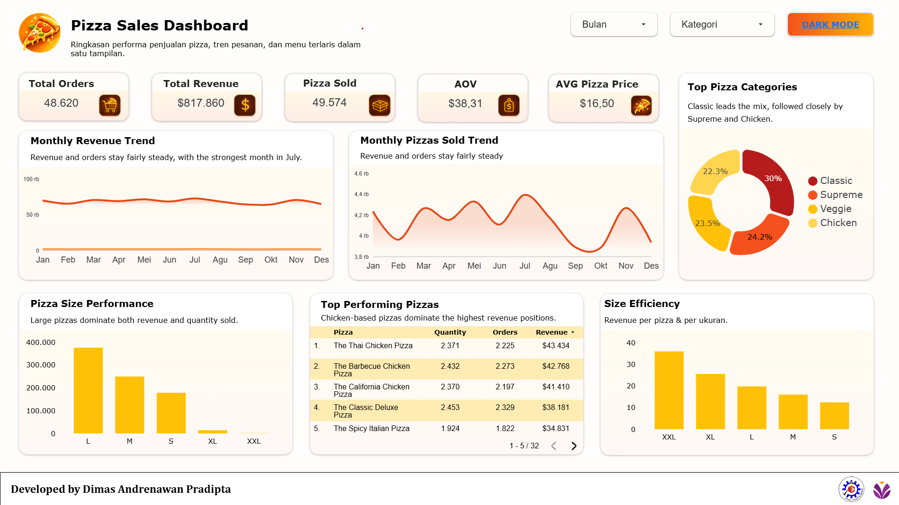

Visualisasi performa bisnis penjualan pizza sepanjang satu tahun
Proyek ini merupakan visualisasi data komprehensif yang menyajikan performa bisnis penjualan pizza sepanjang satu tahun. Dashboard ini dirancang untuk memudahkan pemangku kepentingan dalam memahami metrik operasional seperti total pesanan, pendapatan, dan tren menu terlaris dalam satu tampilan yang bersih dan modern.

Ekstraksi data penjualan pizza dari sistem POS
Transformasi dan struktur data di BigQuery
Visualisasi intuitif di Looker Studio
Testing dan deployment ke production
Data Visibility
Decision Making
Efisiensi Operasional